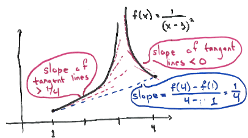

First notice that
\[f(4)-f(1) = 1^{-2} - (-2)^{-2} = 1-\frac {1}{4} = \frac {3}{4}\]
and so we are looking for a value \(c\) such that
\[3 f^\prime (c) = \frac {3}{4} \quad \Longrightarrow \quad f^\prime (c) = \frac {1}{4} \]
Then since \(f'(x) = \frac {-2}{(x-3)^3}\), we can compute:
\[ f'(c) = \frac {-2}{(c-3)^3} := \frac {1}{4}\]
\[ (c-3)^3 = - 8 \]
\[ c = 3 - 2 = 1 \]
But \(1\) is not in the interval \((1,4)\). This does not contradict the Mean Value Theorem since \(f\)
is not continuous at \(x=3\).
